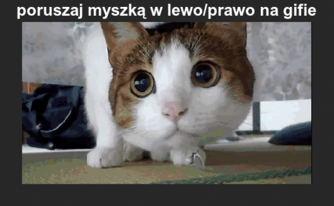

Kiedy powstała? Maj 1995.
Dlaczego jest to język skryptowy? Nie musi być kompilowany.
Gdzie jest wykonywany JS? Przy tworzeniu stron WWW.
Dlaczego jest to bezpieczne narzędzie? Ponieważ zużywa mniej plików z komputera.
Czy jest to język obiektowy , jeśli tak to dlaczego? Tak, ponieważ jest on na bieżąco dopracowywany.
window.open("obraz.html","okienko","toolbar=no,directories=no,menubar=no,height=280,width=160,top=200,left=200");
……………………………wytłumaczenie……………………………………………………………………………….
……………………………wytłumaczenie……………………………………………………………………………….
toolbar=no: zwraca obiekt toolbar, którego widoczność można ustawić dla danego okna
directories=no: wartość yes lub no (1 lub 0): pokazuje lub ukrywa przyciski katalogów
menubar=no: zwraca obiekt menubar, którego widoczność można ustawić dla danego okna
height=280: wysokość dokumentu
width=160: szerokość dokumentu
top=200: wartość w pixelach : ustawia położenie okna względem góry ekranu
left=200: wartość w pixelach : ustawia położenie okna względem lewej strony ekranu
window.close(): tworzy przycisk powodujący zamknięcie okna
